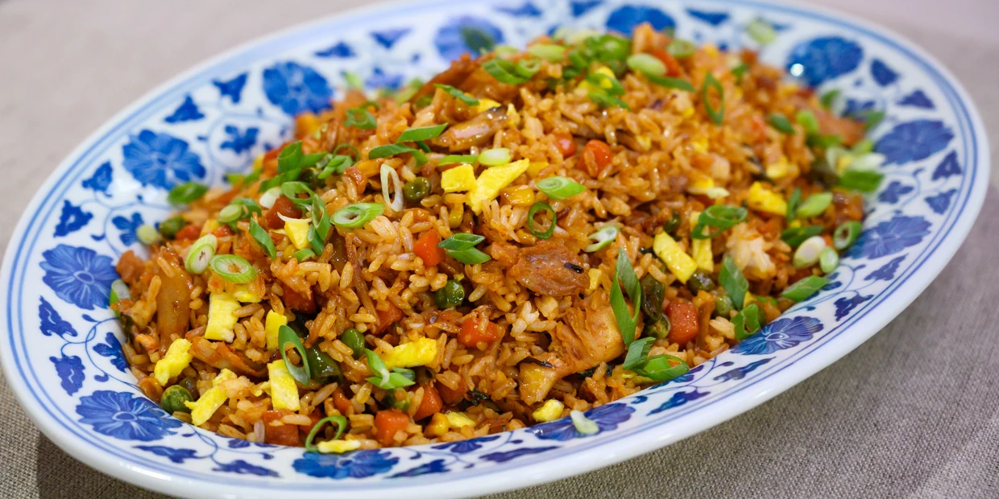

Fried Rice

Fried rice is a quick and delicious way to transform leftovers into something delicious! Though we sometimes think of certain ingredients being typical (eggs, garlic) the only thing you need to make fried rice is heat, rice, and oil. Anything else you add is up to you.
Ingredients
- 3 tbsp. sesame oil
- 3 large eggs
- Salt
- 2 carrots, diced
- 3 spring oniong
- 3 cloves garlic, crushed
- 1 tbsp. peeled and crushed ginger (from a 2.5cm piece)
- 800 g cooked long grain rice (preferably leftover)
- 115 g frozen peas
- 3 tbsp. low-sodium soy sauce
Directions
- Heat a large cast-iron pan over high heat until very hot, about 2 minutes. Add 1 tablespoon oil.
- Beat egg with 2 teaspoons water and a large pinch salt and add to pan. Cook, stirring to form large soft curds, about 30 seconds. Transfer to a plate.
- Return pan to high heat and add 2 tablespoons oil, the carrots, and whites of the spring onions. Cook until lightly golden, about 2 minutes. Add garlic and ginger and cook, stirring, until fragrant, 1 minute.
- Add rice, peas, and cooked eggs to pan. Pour in soy sauce and cook, stirring until heated through, 1 minute. Season with salt and pepper and stir in the remaining spring onions.